Compra. Libro y diario
Las facturas 51, 59, 60 y 61 están en el diario. El asiento es tipo COMPRAS, pero las líneas siguen en Caja y Banco Chile, no en Proveedores ni en IVA crédito.

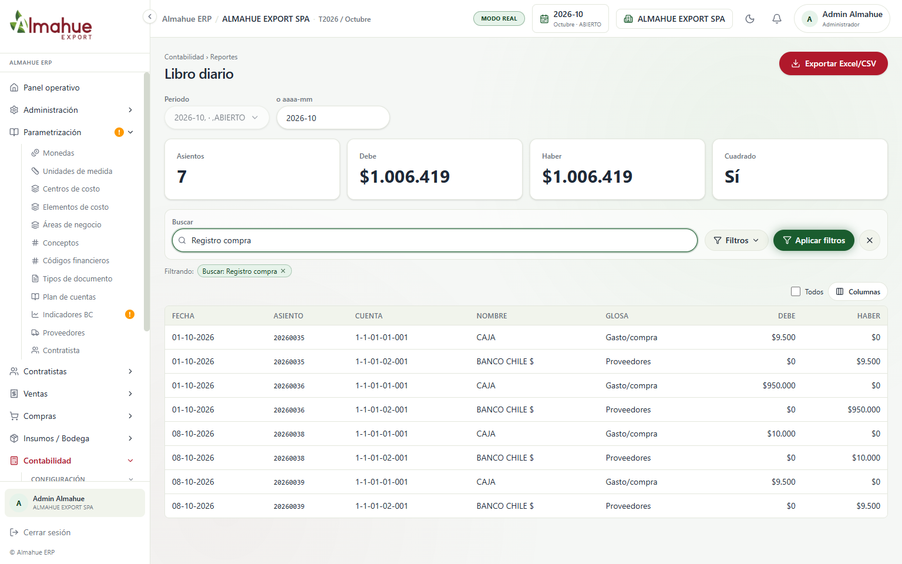
ALMAHUE EXPORT SPA. Octubre 2026, salvo la cartola, que está en septiembre. El periodo de trabajo quedó de vuelta en octubre.
Recorrido por pestañas: recorrido-muestra.html.
Las órdenes 101606909139 y 101606909138, a ALM SERVICES SPA, están facturadas. En el diario de octubre salen como clientes, ingreso e IVA débito. Asientos 20260040 y 20260041.
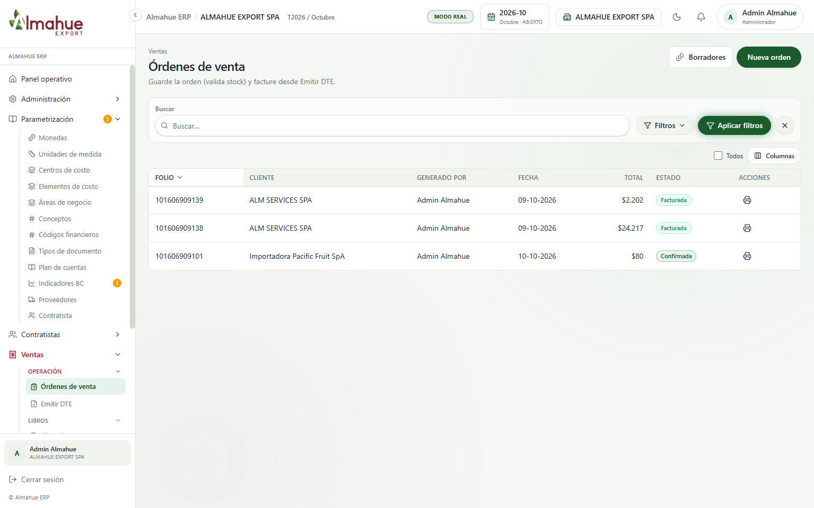
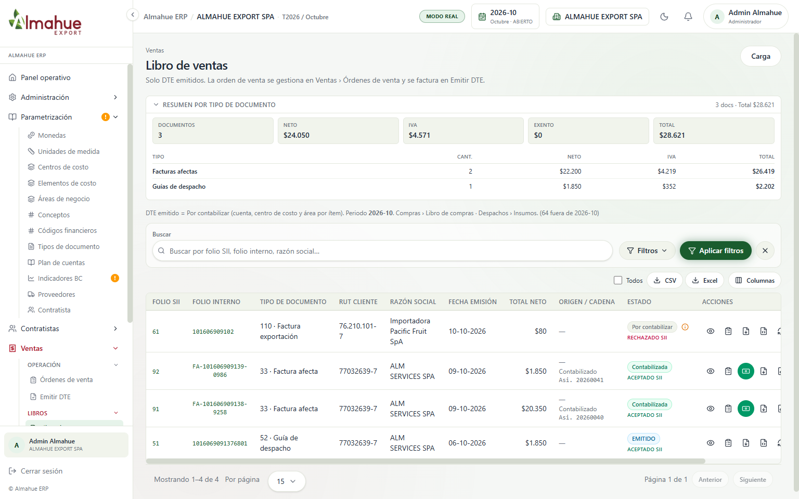
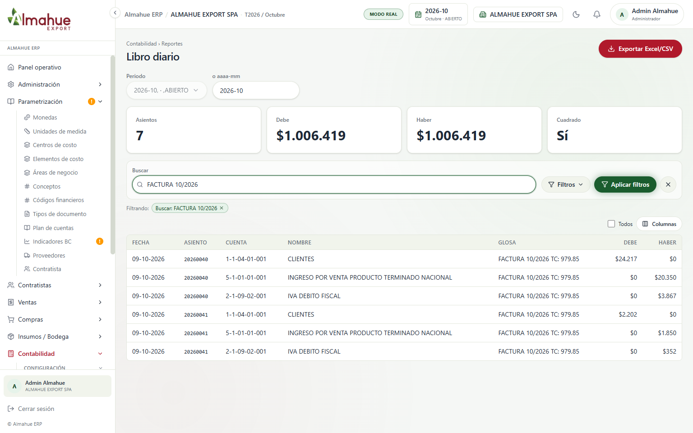
Las facturas 51, 59, 60 y 61 están en el diario. El asiento es tipo COMPRAS, pero las líneas siguen en Caja y Banco Chile, no en Proveedores ni en IVA crédito.

Se creó el 20260042: Mutuos $1.000 contra Provisiones varias $1.000. Después se anuló. El 20260043 es la reversa, origen REVERSA:20260042, misma fecha. En el mayor el efecto neto es cero.
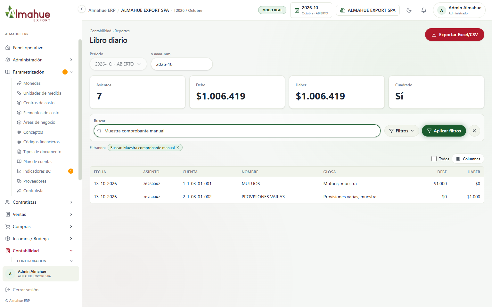
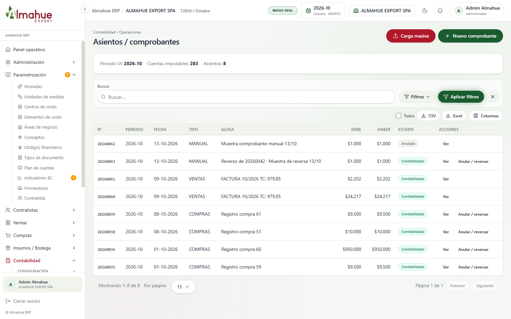
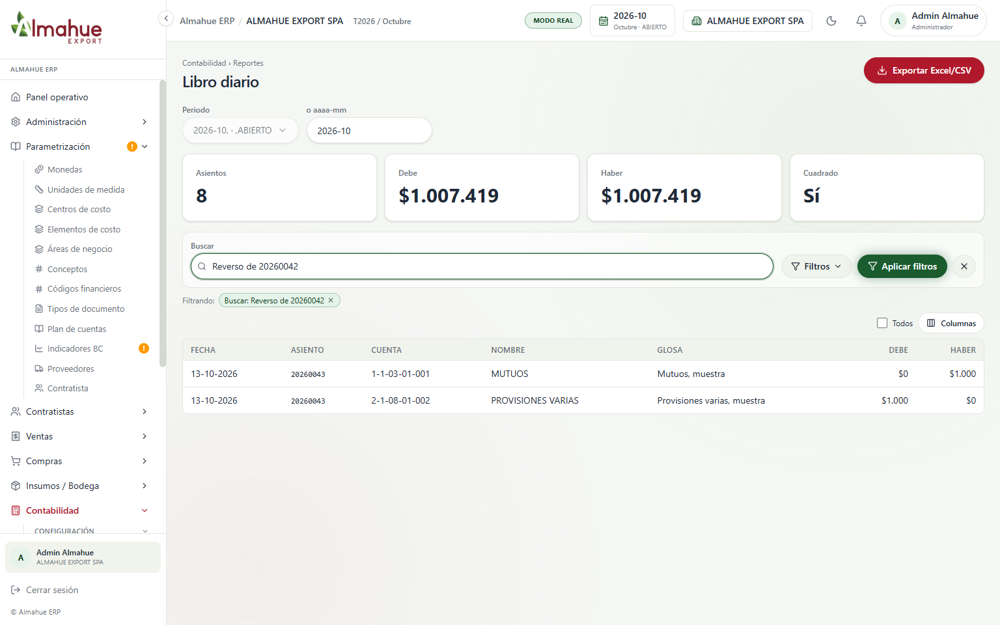
En el mayor se ven juntos la compra (Caja), la venta (Clientes) y el manual (Mutuos $1.000, antes de la reversa). El balance es el de después de la reversa.
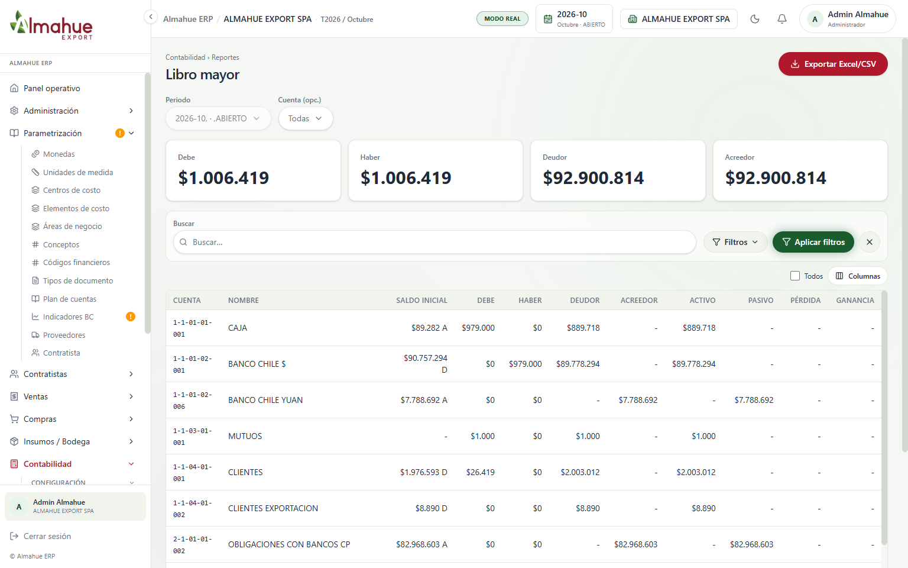
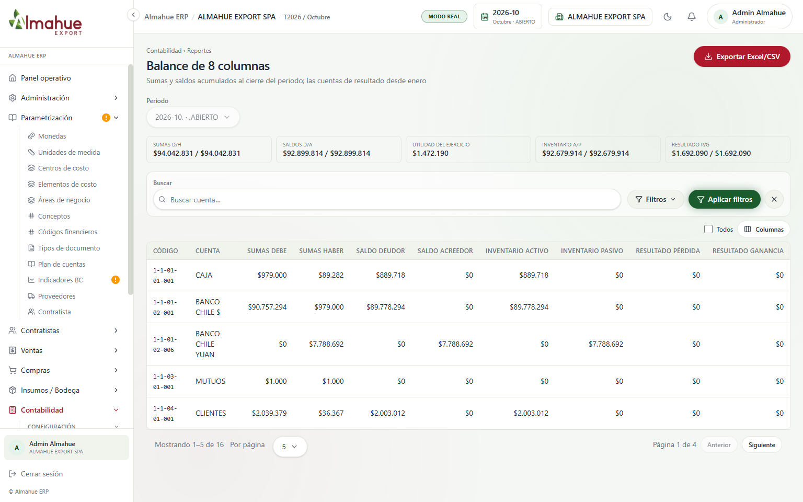
Hay tres asientos CARTOLA en septiembre. El diario filtrado muestra banco contra la contrapartida. No se contabilizó una línea nueva. El periodo volvió a octubre después de estas fotos.
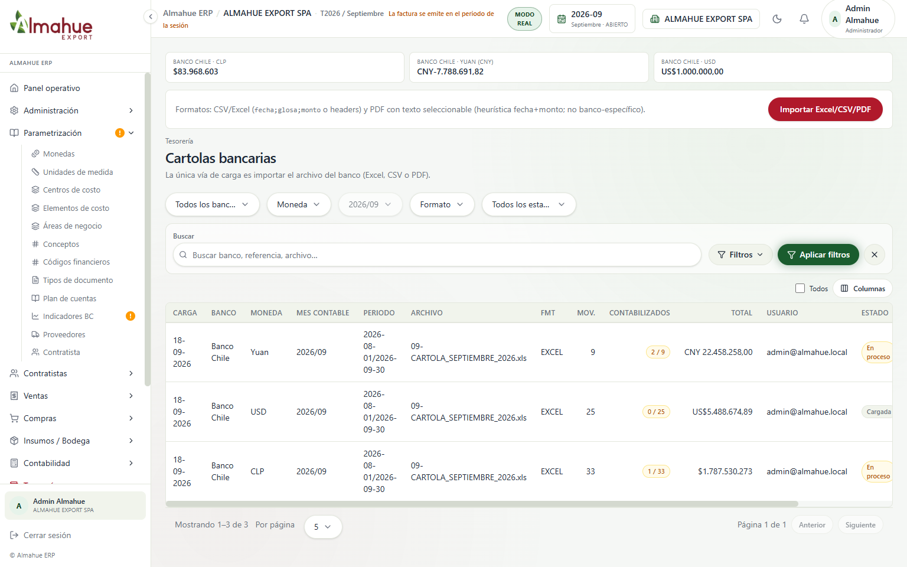
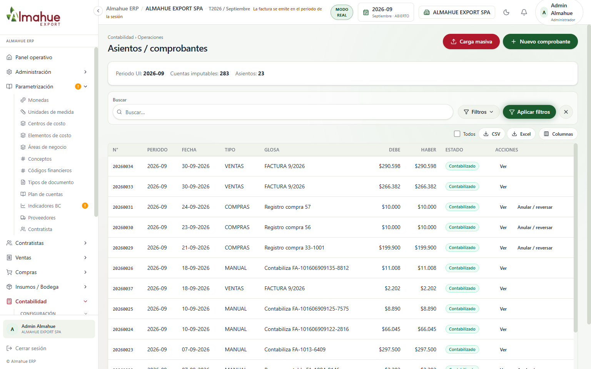
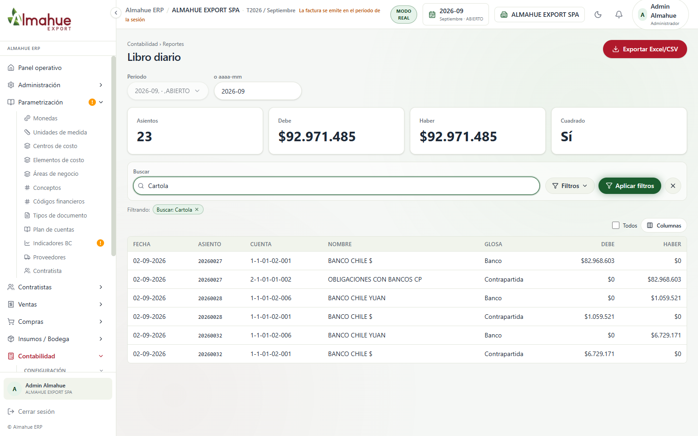
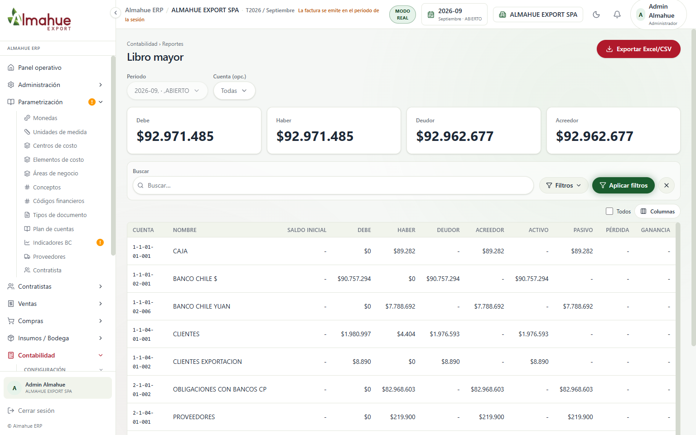
La vista previa de octubre omite el traspaso: no hay proformas en estado definitiva o facturada. No se apretó Traspasar. Por eso no existe TRASPASO-CTR ni CENTRALIZA en esta empresa. Ventas y compras ya no se centralizan por esta pantalla: van al libro de ventas y al de compras.
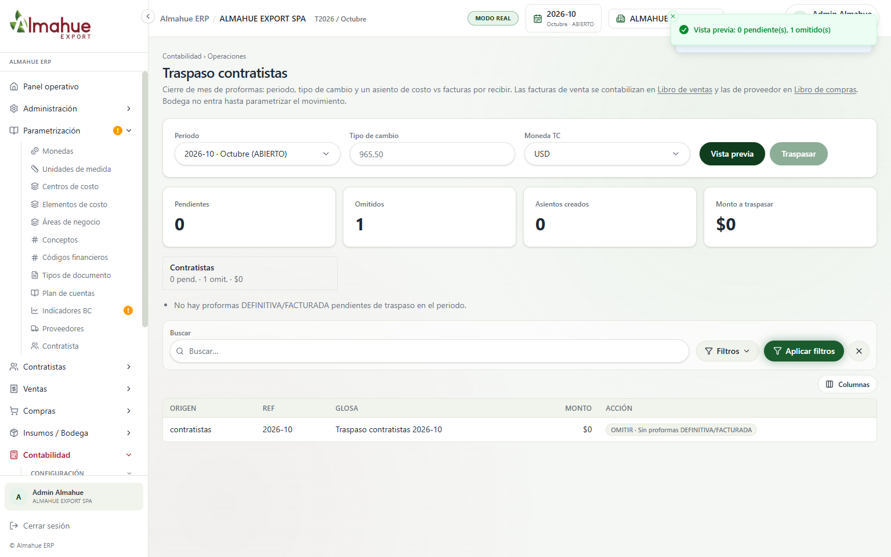
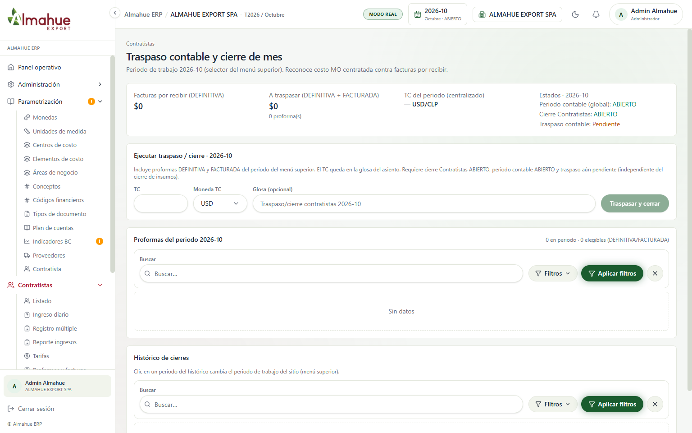
La simulación de octubre propone una ganancia de $25.987.659.941 sobre 29 partidas. No se apretó Contabilizar revaluación. No hay asiento REVALUACION_TC.
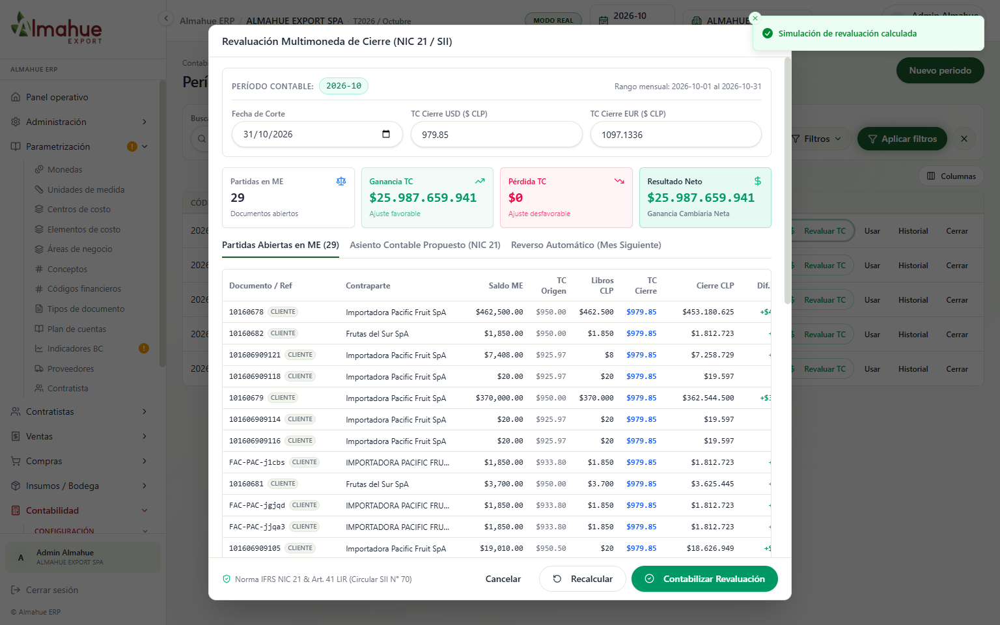